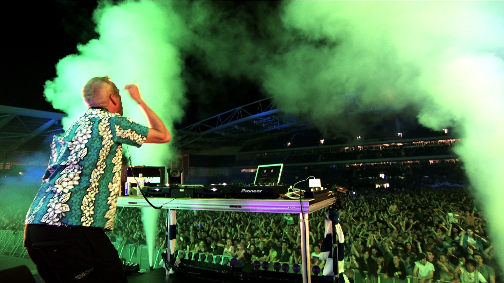
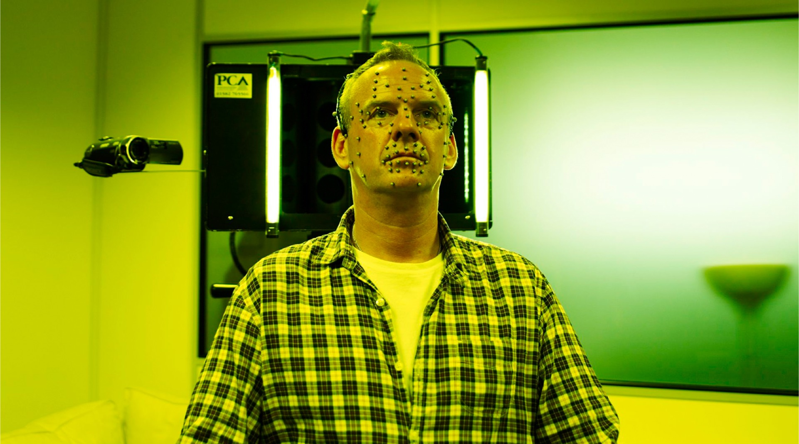
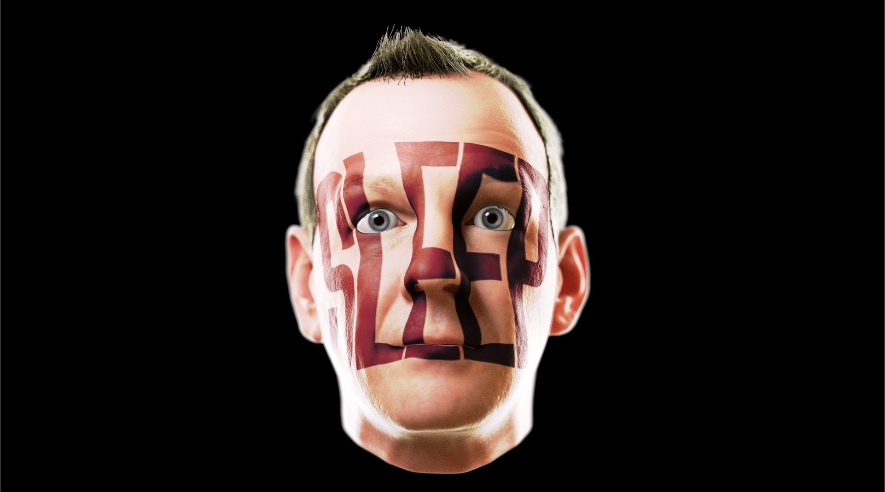

Fatboy Slim
Harder, Faster, Louder.

IMMERSE
We've been working with Fatboy since the first Brighton Beach Boutique in 2001.
The success of that event led to the second Brighton Beach Boutique the following year which saw over 250,000 people party on Brighton Beach.


AMAZE
A legendary gig that lead to us working extensively with Norman over the next decade as his show director and content producer.


Working with Norman has allowed us to play with the characters that live on planet Fatboy.

As you can imagine it has been an amazing journey and privilege to entertain millions of people with experiences that have not only put smiles on faces but help shape the cultural zeitgeist.
From Brazil to the Great Wall of China, 3D glasses to 3D heads we've been there and done that.

AMAZE
The aim of a live show is make an impact on people's minds. To do that we have consistently been researching and experimenting with what creates an amazing experience.
Having worked on hundreds of different shows our prime objective is always leave the audience feeling immersed and amazed. Below you can see the process of creating a 3D scan we did of Norman at Pinewood studios.



By having a model of Norman's head we are able to create a variety of 3D Fatboys with different textures that can be used to say vocal parts to new tracks.

From Brazil to the Great Wall of China, 3D glasses to 3D heads we've been there and done that.